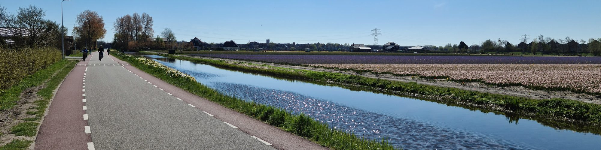

The recipe, free. Each piece takes one real, working system and shows the method behind it, so you can build your own. 59 articles in 6 subjects.
Why structure, not a smarter model, is what makes knowledge work with AI. The argument, and where it comes from.
12 articlesContext, skills, prompts and limits. How to give an AI a workspace it can act in, and how to keep it honest.
10 articlesFolders, units, captures and filters. The small structural choices that decide whether notes can be found and reused.

12 articlesPhotos, health, books, trips and daily notes, treated as data you own and can query.
9 articlesSync, backup, history and publishing. The plumbing that keeps your files the source of truth.
2 articlesRules that can be checked, gates that catch mistakes, and systems that correct themselves.